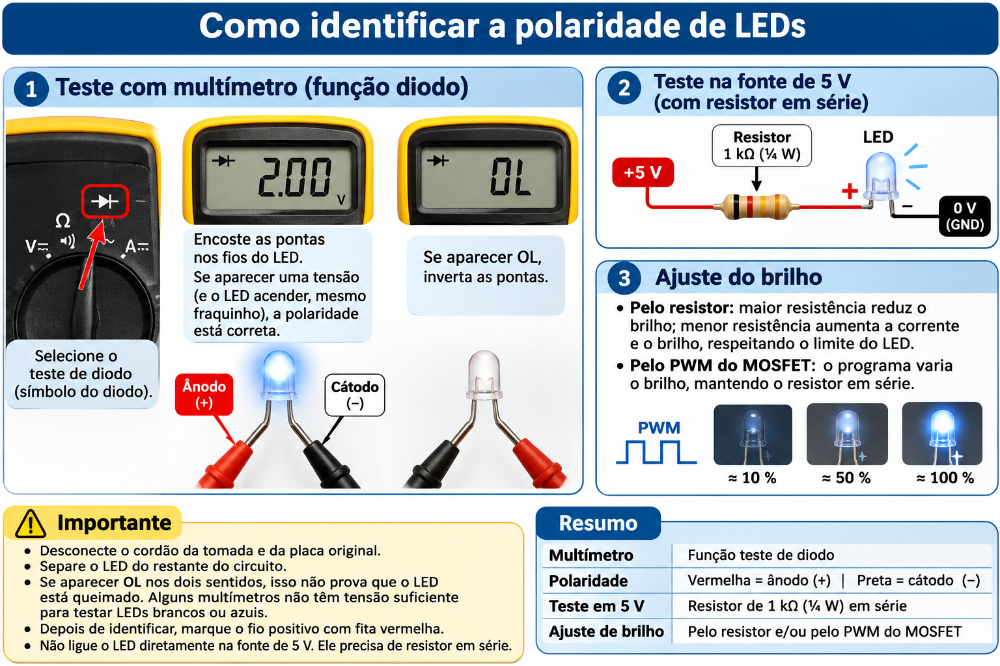

Como identificar a polaridade de LEDs
Uma maneira simples de identificar o positivo e o negativo de um LED é utilizar um multímetro na função teste de diodo. O procedimento também pode ser usado para LEDs reaproveitados de cordões de iluminação, desde que estejam desligados e isolados do circuito original.

1. Identificação com o multímetro
- Desconecte completamente o cordão da tomada e da placa de controle original. Isole o LED do restante do circuito, mantendo seus dois fios.
- Selecione no multímetro a função teste de diodo, indicada pelo símbolo de diodo.
- Encoste uma ponta de prova em cada fio do LED.
- Se o instrumento indicar uma tensão e o LED acender, mesmo fracamente, a ponta vermelha estará no positivo (ânodo) e a ponta preta estará no negativo (cátodo).
- Se aparecer OL ou indicação de circuito aberto, inverta as pontas de prova e repita a medição.
Observação: Se aparecer OL nas duas posições, o LED não está necessariamente queimado. Alguns multímetros não fornecem tensão suficiente para acender LEDs brancos ou azuis.
Após identificar a polaridade, marque o fio positivo com uma pequena fita vermelha.
2. Teste com uma fonte de 5 V
Para testar um LED comum de dois terminais utilizando uma fonte de 5 V, comece com um resistor de 1 kΩ, ¼ W, ligado em série.
Cátodo (−) do LED → GND da fonte
O resistor pode ser colocado antes ou depois do LED, desde que permaneça em série. Esse valor inicial é conservador e normalmente produz brilho reduzido.
Atenção: Não conecte um LED comum diretamente à fonte de 5 V. Utilize sempre um resistor ou outro circuito adequado de limitação de corrente. LEDs e módulos com resistores internos exigem avaliação específica.
3. Como ajustar o brilho
- Alterando o resistor: Resistência maior reduz a corrente e o brilho. Resistência menor tende a aumentar ambos. Respeite a corrente máxima permitida para o LED.
- Usando PWM com o módulo Mosfet: O programa da ESP32 pode variar o brilho por modulação de largura de pulso (PWM). O resistor de limitação de corrente continua necessário.
Com resistor de 1 kΩ, o PWM permite variar o brilho entre apagado e o máximo estabelecido por esse resistor. O PWM não aumenta o brilho além desse limite.
4. Aplicação na EFMN 74
O procedimento é útil para identificar os fios e ajustar a iluminação de casas, armazéns, cabines e outros elementos da maquete. Antes da instalação definitiva, teste cada LED individualmente e identifique sua polaridade.